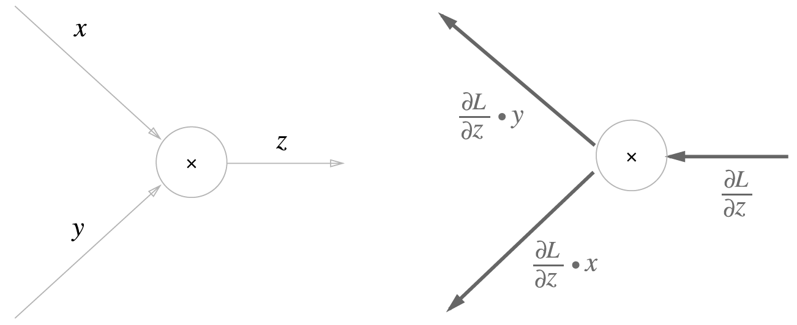

8 Backward Propagation
지금까지 순전파를 거쳐 산출한 손실함수값을 수치미분을 이용하여 기울기만큼 매개변수를 업데이트 하는 학습과정을 살펴보았습니다. 구현은 단순할 수 있으나, 계산속도는 그리 빠르지 않습니다. 여기서 등장하는 것이 오차역전파(backpropagation)입니다.
오차역전파를 이해하기 위하여는 우리는 2가지를 먼저 이해할 필요가 있다고 생각합니다. 하나는 미분에서의 Chain-rule이고 다른 하나는 피보나치 수열에 기반한 Dynamic Programming입니다,
8.1 Pre-requisite: Chain-rule and Dynamic Programming
오차역전파는 기본적으로 손실함수 값에서 입력값까지의 매개변수를 역으로 조정하는 과정으로 순방향과 반대방향으로 국소적인 미분값을 곱하며 가중치를 조정하는 절차로 이해할 수 있습니다.
8.1.1 Chain-rule
반대방향으로 국소적인 미분값을 곱한다는 것은 어떠한 의미를 갖고 있을까요? 그리고 이러한 연산의 기반이 되는 개념이 무엇일까요? 이물음에 대한 답변이 바로 연쇄법칙입니다. 연쇄법칙에 관한 자세한 설명은 아래 3Blue1Brown1 영상을 참고하기 바랍니다.
1 3Blue1Brown은 많은 수학적인 문제를 도식화하여 아주 직관적으로 설명하고 있어 매우 유용합니다.
8.1.2 Dynamic Programming
연쇄법칙을 정확히 이해하였다면 지속적으로 미분값이 재귀적으로 사용됨을 확인할 수 있습니다. 그러나 이미 계산된 미분값을 따로 저장하였다가 불러오기만 한다면 연산이 얼마나 쉬워질까요? 쉬워진다기보다 간단해지고 컴퓨터의 연산의 수를 줄일 수 있지 않을까요?
바로 이러한 배경에서 연쇄법칙을 빠르게 수행하기 위하여 고려되는 방법이 동적계획법 입니다. 이는 피보나치 수열의 계산에 있어서 재귀적으로 반복계산되는 노드를 따로 저장하여 그 값을 호출하여 사용하도록 하므로써 연산의 수를 줄여 알고리즘의 성능을 개선해줄수 있을 것입니다.
동적계획법에 대한 자세한 설명은 아래 영상을 참고하시기 바랍니다.
8.2 Backpropagation
역전파 과정을 연쇄법칙을 수식 및 그래프를 활용하면 보다 직관적이고 쉽게 이해할 수 있습니다. 우선 합성함수2 Equation 8.1 의 식을 미분을 실행하며 예로 살펴보겠습니다,
2 합성함수의 미분은 함성함수를 구성하는 각 함수의 미분의 곱으로 표현가능
\begin{align} z &= t^2 \\ t &= x+y \end{align} \tag{8.1}
x에 대한 z의 미분인 \frac{\partial{z}}{\partial{x}}은 \frac{\partial{z}}{\partial{t}}과 \frac{\partial{t}}{\partial{x}}의 곱으로 나타낼 수 있습니다. 그리고 \partial{t}를 서로 지울 수 있습니다.
\begin{align} \frac{\partial{z}}{\partial{x}} &= \frac{\partial{z}}{\partial{t}}\frac{\partial{t}}{\partial{x}} \\ &= \frac{\partial{z}}{\not{\partial{t}}}\frac{\not{\partial{t}}}{\partial{x}} \end{align} \tag{8.2}
연쇄법칙을 써서 \frac{\partial{z}}{\partial{x}}를 구하기 위하여 편미분을 실시하고, 두 미분값을 곱하여 최종 미분값을 산출합니다.
\begin{align} \frac{\partial{z}}{\partial{t}} &= 2t \qquad \frac{\partial{t}}{\partial{x}} = 1 \\ \\ \frac{\partial{z}}{\partial{x}} &= \frac{\partial{z}}{\partial{t}}\frac{\partial{t}}{\partial{x}} = 2t \cdot 1 = 2(x+y) \end{align} \tag{8.3}
Equation 8.3 를 그래프로 나타내어 연쇄법칙을 나타내봅시다. Figure 8.1 에서 보는 바와 같이 오른쪽에서 왼쪽으로 신호를 전달(전파) 합니다. 전파의 과정에서 입력값에 해당하는 편미분값을 곱하여 다음 노드에 전달함을 확인 할 수 있습니다.

Figure 8.1 과 같은 과정에 Equation 8.3 의 미분값을 대입하면 Figure 8.2 와 같은 결과를 얻을 수 있습니다.

8.2.1 Backpropagation of Addition Nodes
먼저 z=x+y를 갖고 덧셈노드에 대한 역전파를 살펴보겠습니다. 먼저 이 식에 대한 미분을 해석적으로 구하면 \frac{\partial{z}}{\partial{x}}와 \frac{\partial{z}}{\partial{y}} 모두 1이 됩니다.
Figure 8.3 의 그래프를 기준으로 역전파3 과정을 살펴봅시다.
3 역전파는 순방향과 반대방향으로 국소적 미분(편미분)값을 곱하는 방법으로 수행
상류에서 산출한 편미분 값(\frac{\partial{L}}{\partial{z}})을 x간선의 경우 \frac{\partial{L}}{\partial{z}}\frac{\partial{z}}{\partial{x}}의 꼴로 역전파가 이루어 지고, y간선의 경우 \frac{\partial{L}}{\partial{z}}\frac{\partial{z}}{\partial{y}}의 꼴로 역전파가 이루어 집니다.
Figure 8.3 는 덧셈의 역전파 이므로 \frac{\partial{L}}{\partial{z}}\frac{\partial{z}}{\partial{x}}=\frac{\partial{L}}{\partial{z}}\cdot1과 \frac{\partial{L}}{\partial{z}}\frac{\partial{z}}{\partial{y}}=\frac{\partial{L}}{\partial{z}}\cdot1로 변형됨으로 입력된 값 그대로 다음 노드에 전달되게 됩니다.

8.2.2 Backpropagation of Multiplication Nodes
다음으로 z=xy를 갖고 곱셈노드에 대한 역전파를 살펴보겠습니다. 먼저 이 식에 대한 미분을 해석적으로 구하면 \frac{\partial{z}}{\partial{x}} = y와 \frac{\partial{z}}{\partial{y}} = x가 됩니다.
Figure 8.4 의 그래프를 기준으로 역전파 과정을 살펴봅시다.
상류에서 산출한 편미분 값(\frac{\partial{L}}{\partial{z}})을 x간선의 경우 \frac{\partial{L}}{\partial{z}}\frac{\partial{z}}{\partial{x}}=\frac{\partial{L}}{\partial{z}}\frac{\partial{z}}{\partial{x}}=\frac{\partial{L}}{\partial{z}}\cdot y의 꼴로 역전파가 이루어 지고, y간선의 경우 \frac{\partial{L}}{\partial{z}}\frac{\partial{z}}{\partial{y}}=\frac{\partial{L}}{\partial{z}}\frac{\partial{z}}{\partial{y}}=\frac{\partial{L}}{\partial{z}}\cdot x의 꼴로 역전파가 이루어 집니다.
Figure 8.3 는 곱셈의 역전파는 서로 바꾼값을 곱하여 하류로 흘려 보내게 됨을 확인할 수 있습니다.


- 신경망의 학습을 위한 역전파 과정은 모든 독립변수에 대한 편미분을 통하여 기울기를 산출
- 대부분의 경우 이를 간단하게 표현하기 위하여 \nabla연산자를 사용
- 편미분을 통한 가중치(\omega)의 업데이트 과정을 아래와 같이 표현
\omega = \leftarrow \omega - \alpha \nabla_{\omega} \epsilon